Scorecard Editor
We are delighted to announce that preliminary work on a PMML (4.4) Scorecard Editor has completed.
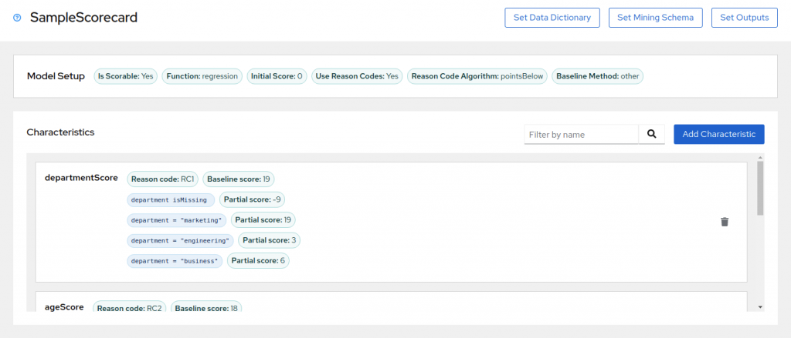
A VSCode extension has been published to the Marketplace and can be added to your VSCode installation.
The release is considered alpha and primarily aimed at providing a channel to gather feedback.
The journey to provide a capable editor has started but the road is long and winding.
Please install, kick the tyres and provide feedback as this is what will drive change.
Editing made simple
Just click, edit and move on. All changes can be undone/redone.
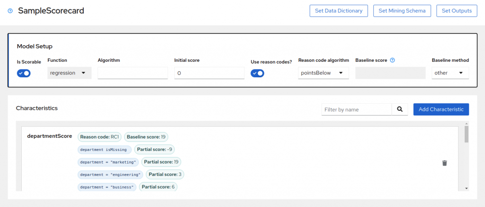
In-line validation
Made a mistake? Errors are shown in-line and can be undone and corrected as needed.
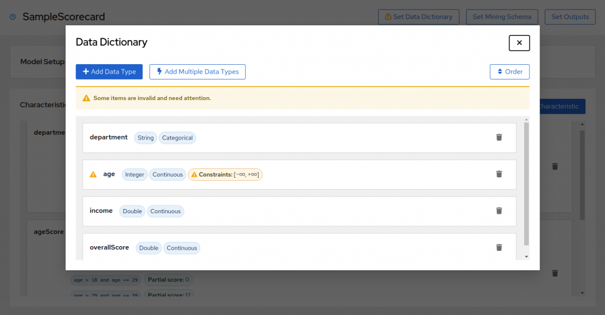
Integration with VSCode
Errors also integrate with the Problems panel.
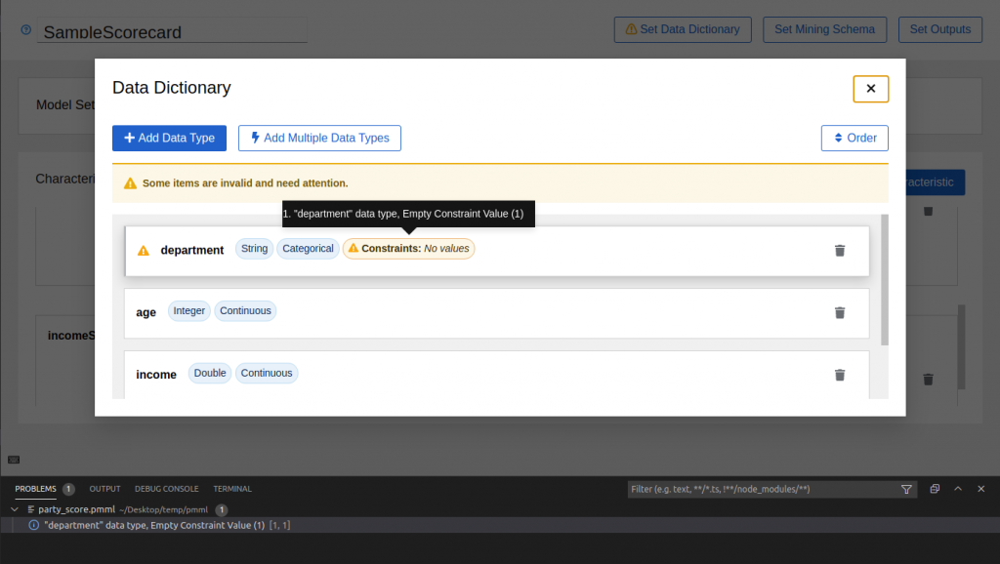
Defining Data Fields
Use the "Set Data Dictionary" dialog to define Data Fields.
Click on a row to edit a Data Field’s extended properties
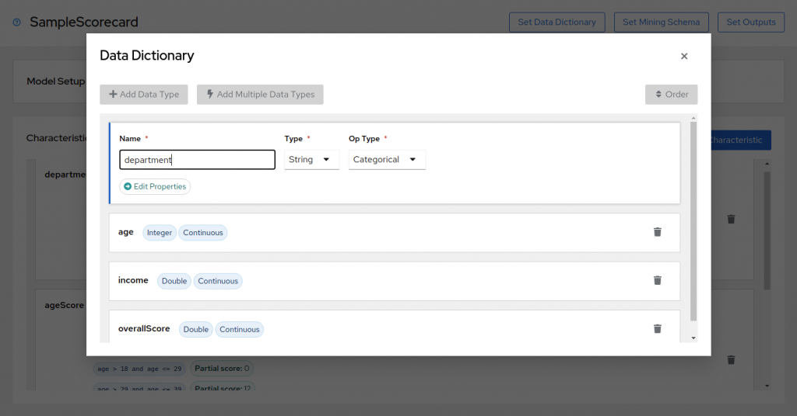
Click on "Edit properties" for more advanced extended properties.
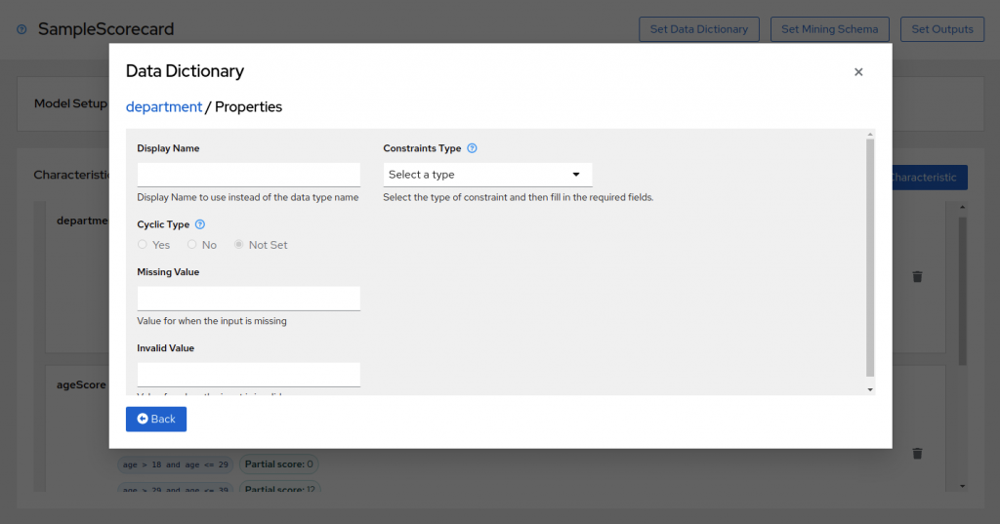
Defining Mining Fields and Output Fields
Similarly the Mining Schema and Outputs can be defined.
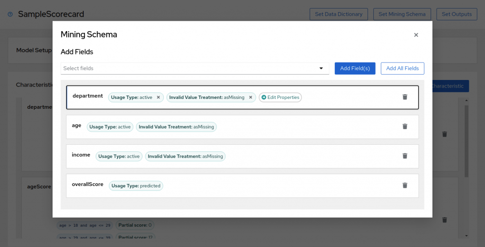
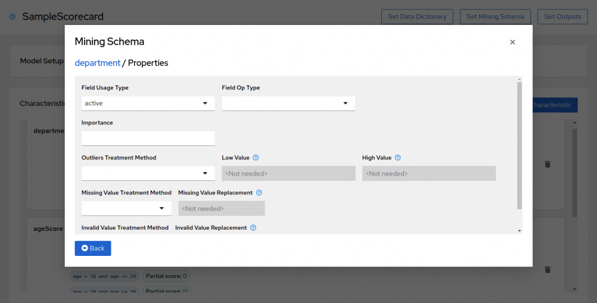
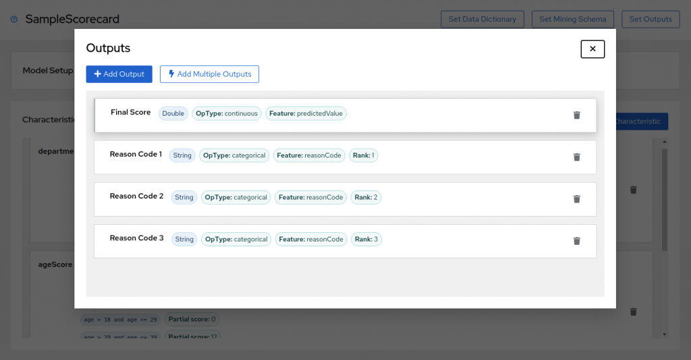
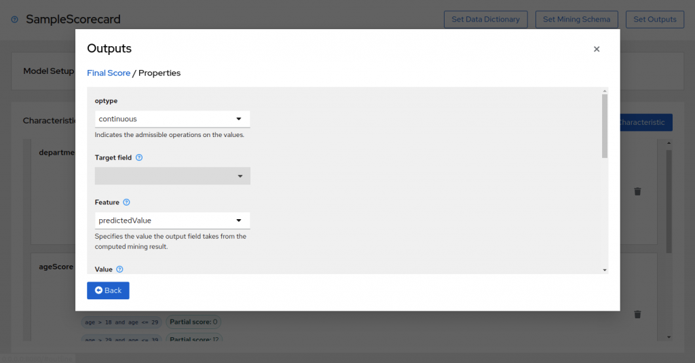
Characteristics and Attributes
The way in which you interact with the editor remains consistent.
Both Characteristics and Attributes are authored similarly to the different types of fields.
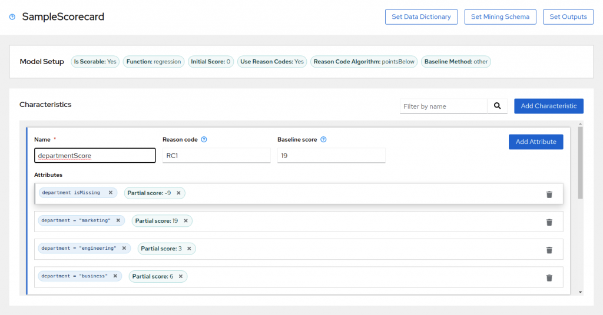
Predicates
The PMML Specification allows for the definition of complex compound expressions.
We therefore decided to provide a context-aware, auto-complete predicate editor.
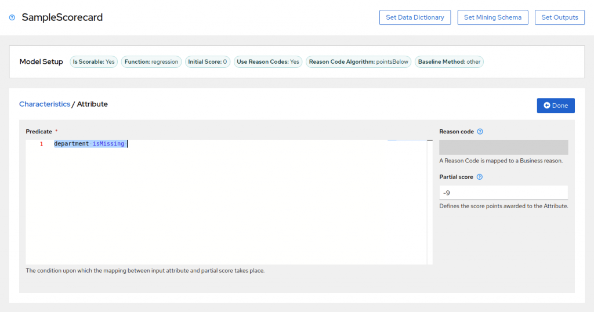
This is where we really would like to receive feedback.
Your editor needs you!
Real-life predicates seem to be much more simple and we find ourselves at a cross-road.
Do we invest in completing the text-based predicate editor or do we investigate a different approach?
Your feedback counts!